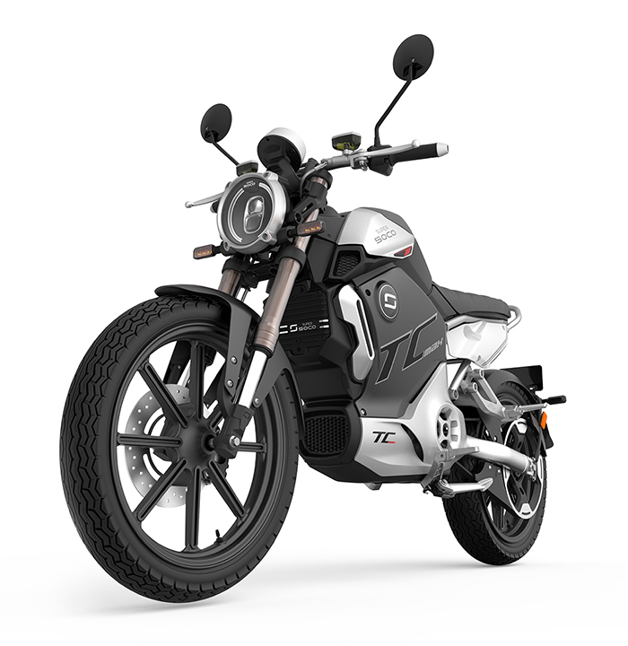

Super Soco TC Max
Moderno clássico, exclusivo e elegante. Combine potência de um motor elétrico com toda a elegância do design moderno clássico
Design Moderno Clássico + Bateria íons-lítio + Motor Bosch = Super Soco TC Max
Veja abaixo os recursos disponíveis na Super Soco TC Max.
Motor central de alto desempenho na roda traseira com torque até 180N.m, 92% de eficiência energética, aceleração até 4.500 Watts para obter a potência máxima do motor e inclinação máxima até 17%.
Equipada com bateria íons-lítio removível e recarregável percorre até 140KM em condições ideais.
Visualização simples das informações mais importantes relativas à velocidade atual, autonomia, temperatura e modo de condução.

Reservatório de líquido de freio, buzina, teclas nos comandos, bloqueio de guiador, 2 espelhos e acelerador.

Sistema de freio CBS combinado, com componentes de alta qualidade para uma frenagem eficiente e segura. Discos de freio hidraulicos de 240 mm.
Controlador externo: a combinação perfeita de desempenho e alcance, distribuição inteligente da força, reação do motor em tempo real com 3 modos de condução.
Botão Push to Start permite ativar a ignição sem chave, para isto basta pressionar o botão para ativar a moto.
Comando de bloqueio remoto com sistema anti-roubo / alarme.
Chave para abrir o compartimento da Super Soco TC MAX.
Entradas de ar Super Soco TC MAX.
Assento para dois usuários (condutor e passageiro).
Luzes dianteiras.
Luzes traseiras e local da placa.
Apoio de pés do passageiro e suspensão esportiva ajustável indicada para melhorar o conforto e condução do usuário.
Apoio de pés do condutor ajustável em 6 posições.
Aperte o Play
Veja o porque a Super Soco TC Max combina com você.
Agende um Test-Ride
Conheça antes de comprar
Agora que você viu como uma Super Soco TC Max pode mudar seu modo de se locomover, porque não entra em contato conosco e agenda um Test-Ride? Clique no botão abaixo e mande-nos uma mensagem
Entre em Contato